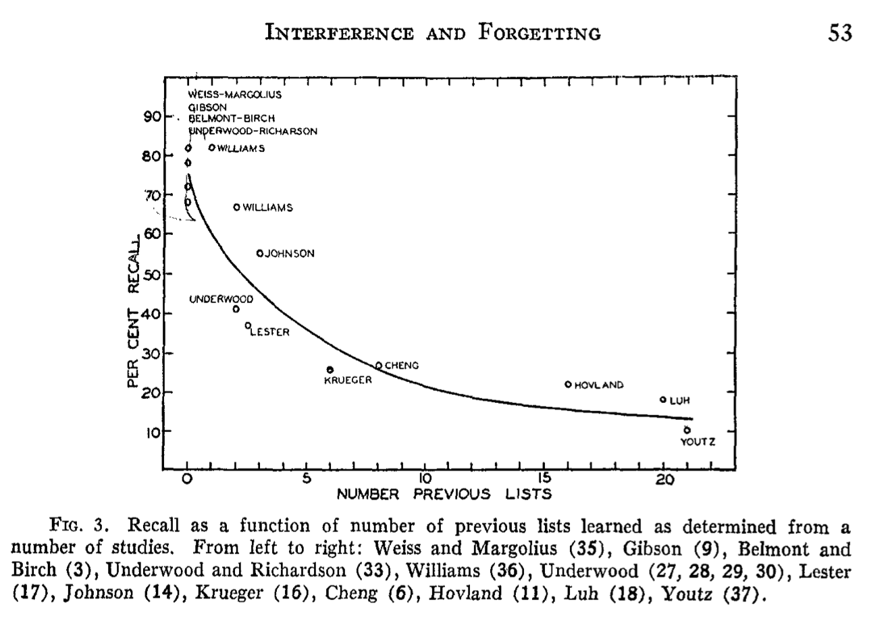
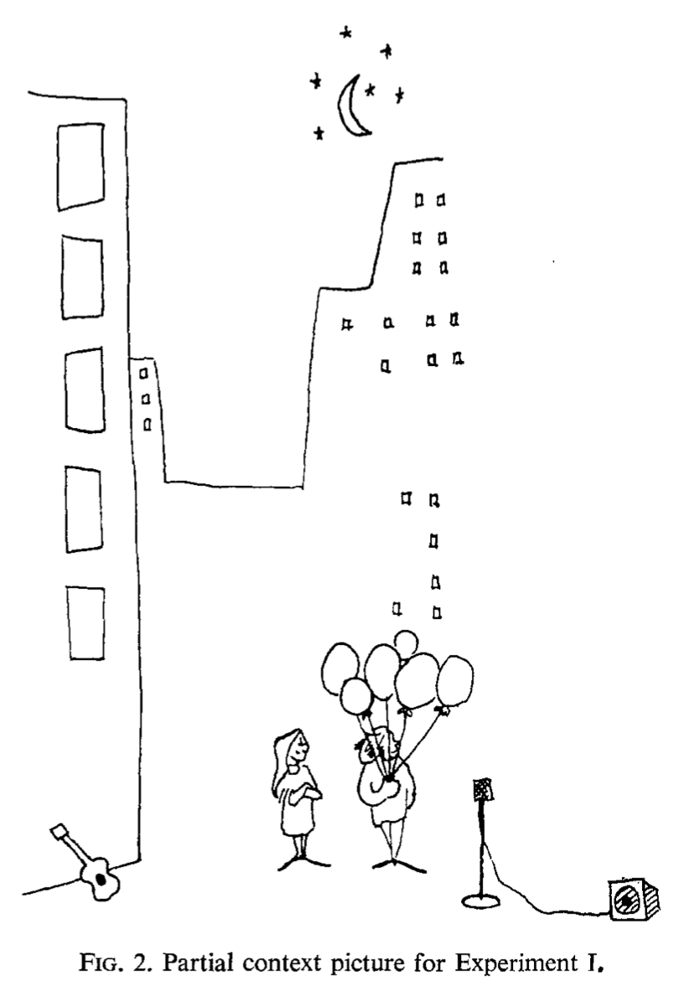
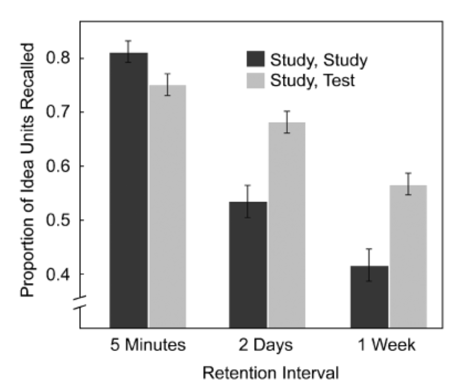

9 Memory II
Abstract
This chapter continues to discuss memory research in cognition. In the last chapter we reviewed some early memory research that led into an information processing approach to memory in the 1960s. In this chapter we will pick up our discussion from this time period onward. I will also focus less on models of memory, and more on tasks, phenomena, and principles of memory.
9.1 Verbal Learning and Verbal Behavior
The period of behaviorism in American psychology had a sizeable influence on the character of memory research that would follow in the 1950s, 60s, and 70s. And, it is worth mentioning one of the transitional points between behaviorism and cognitive approaches to explain why so much of this chapter will be about memory for words.
In 1938, B.F. Skinner published his book on a behaviorist approach to animal learning. However, Skinner also sought to apply his behaviorism to people, and all of their behavior as well. In 1947, Skinner’s William James lectures at Harvard developed an extension of behaviorism to human language. The idea was that human language involved verbal behavior, and that principles of behaviorism could be applied to the domain of verbal behavior. Just like a science of behaviorism could determine how environmental stimuli could be manipulated to control a behavioral response in an animal, behaviorism could also determine the functional principles controlling the output of verbal responses in people. His lectures were widely circulated in unpublished form, and were eventually published in 1957, in the book “Verbal Behavior” (Skinner, 1957). At the same time, other domains like psycholinguistics were also developing, and Noam Chomsky famously critiqued the prospects of a behaviorist science of human language in his review of Skinner’s book (Chomsky, 1959). One of the issues caught hanging in the balance was whether or not cognitive processes would be necessary for a successful account of language.
Subsequently, behaviorist and cognitivist research streams emerged on topics of verbal behavior. Skinner’s behaviorist approach to verbal behavior was followed up in behaviorist journals in the 60s, and some research in that tradition continued at a small pace (Eshleman, 1991). In 1962, following a growing interest in verbal behavior from the emerging cognitive tradition (Cofer, 1978), a new journal was created called “The Journal of Verbal Learning and Verbal Behavior”, and later renamed “Journal of memory and language” in 1985. Many other journals published memory research over that time period, but I am highlighting this journal for three reasons. First, the papers in that journal track several notable developments in memory that we will discuss in this chapter. Second, the journal shows how ideas from the study of associative learning guided the renewed interest in experimental research on human memory. Last, if you ever wondered why memory research uses words as stimuli so often, it might have something to do with the verbal learning and verbal behavior phase of memory research.
To make one more historical note, the growing divide between Skinner’s operant behaviorism and cognitive psychology is nicely documented in Blough and Millward’s 1965 review, “Learning: Operant Conditioning and Verbal Learning”. They begin by quoting Kendler saying “In general, learning theorists understand each other much better than did their ancestors of two decades ago. Neobehaviorists, S-R functionalists, and statistical theorists can communicate easily with each other. Skinnerians also find it easy to communicate among themselves”. The paper then reviews operant conditioning research in part A, and verbal learning in part B, with little overlap between the two research traditions. Their review of verbal learning also provides a bird’s eye view of the increasingly wide-ranging empirical and theoretical concerns that was becoming a new era of cognitive psychology. Much of the work revolved around learning and memory.
9.2 Memory Methodology
We have seen a few different memory tasks in the last chapter. Ebbinghaus memorized lists of nonsense syllables. Bartlett used the method of serial reproduction. Von Restorff had people memorize pairs of items. There was the immediate memory span task, and free-recall for lists of words. Many more memory tasks have been used in the study of learning and memory. Some of these tasks become very popular and generate bursts of research interest. This section describes general properties of memory tasks, and throughout the rest of this chapter we will encounter specific examples of the tasks in action.
Memory tasks typically involve two phases: encoding and retrieval. Generally speaking, the encoding phase involves the presentation of stimuli for a later memory test in the retrieval phase. For example, there were two phases in the free-recall experiments from last chapter showing the serial-position effect. In the encoding phase, participants were presented with a list of words. In the retrieval phase, participants were asked to recall as many words as they could. The encoding and retrieval phases could also overlap depending on how the experiment was conducted. For example, a participant could encode some items, then try to remember them, then encode some new items, and so on.
Memory tasks typically involve experimental manipulation of factors in the encoding and retrieval phases. One aim of the experiments is to determine which factors influence performance in the memory task. Another aim can be to test theories of memory processes. For example, some theories may make predictions about the extent to which the factors will influence memory performance. The addition of experimental manipulations can change almost any aspect of the basic task setup.
Some common manipulations include the following. The kind of information or stimuli presented or learned in the task. Stimuli can be words, pictures, artificial stimuli like nonsense syllables, or sounds, movies, sentences, and more. The frequency of presentation of items. The order of presentation of items. The temporal delay between the encoding phase and the later memory test. Manipulations can also include what the participant does to information during the encoding phase, or how they are asked to remember it in the retrieval phase. If you can think of something that might increase or decrease your ability to remember information, I’d say there is a good chance that a memory researcher may have tried the manipulation at some point in a published experiment.
Memory tasks also involve different methods for measuring memory performance. For example, in the free recall task, a participant could be given a blank sheet of paper and asked to write down as many words as they can remember, in any order. In this task, memory performance could be measured as the number of words correctly written down. There are other tasks as well, such as the recognition task. In a recognition memory task, the retrieval phase involves presenting items to a participant, and having them judge whether the item is new (not presented in the encoding phase) or old (was presented in the encoding phase). Importantly, memory performance depends on the task used to measure memory.
9.2.1 Issues with measuring memory: the case of recognition
The recognition task is a good example to alert you to a common interpretation problem in memory research. The issue is that the choice and structure of a task can easily influence measurements of memory performance. For example, in a recognition memory task the retrieval phase involves a person making judgments about stimuli they have seemn before, and stimuli they have not seen before. Old items from the encoding phase may be presented, and the correct answer is to identify them as old. New items that were not shown in the encoding phase are also presented, and the correct answer is to identify them as new.
One of the issues is that participants can always achieve 100% correct on the old items. All they have to do is say “old” for every item in the test, both old and new items. In this case, it would be obvious that the participant was not discriminating between old and new items, because they would also be 100% incorrect on the new items. This thought experiment highlights the fact that the recognition task can involve a discrimination judgment between old and new items. The ability to tell the difference between old and new items is commonly measured by hits and false alarms.
9.2.1.1 Hits, False Alarms, misses and correct rejections
Hits and false alarms come from an analysis technique called signal detection theory (Green & Swets, 1966), commonly used to describe performance in recognition memory tasks. The table below shows the relationship between response in a recognition memory task, and terms in signal detection theory:
| OLD ITEM | NEW ITEM | |
|---|---|---|
| RESPOND OLD | HIT (Correct Answer) | FALSE ALARM (Incorrect Answer) |
| RESPOND NEW | MISS (Incorrect Answer) | CORRECT REJECTION (Correct Answer) |
A hit is correctly identifying an old item as old. A false alarm is incorrectly identifying a new item as old. We will not go more deeply into signal detection at this point. However, the hit and false alarm rates can be used to measure whether a person can discriminate between old and new items. If the hit and false alarms are equal, like 100% hits and 100% false alarms, then the person is not showing evidence they can tell the difference between old and new items. However, if the hit rate is greater than the false alarm rate, like 80% hits and 20% false alarms, then the person is showing evidence they can make the discrimination. The important aspect is that memory performance in the recognition task is assessed with both hit and false alarm, and not solely on the basis of one measure like proportion correct (hit rate).
9.2.1.2 Choosing the lures (new items)
The discrimination aspect of the recognition task raises the issues of which items to use as lures or new items in the task. Memory researchers sometimes use the word lures to describe new items in a recognition memory test, referring to whether or not participants will take the bait and claim to have recognized the lure even though it was not presented in the encoding phase. The issue with choosing lures or new items, is that recognition performance will improve or worsen depending on whether the lures are easy or hard to discriminate from the old items.
Imagine an encoding phase were you read a list of 20 words that all began with the letter A. Then, in a recognition test you read one word at a time, and were asked to judge whether the word was old (from the list) or new (not from the list). How well do you think you would perform this task if all of the new words also began with the letter A, compared to a situation where all of the new words began with the letter Z? The recognition task would be very easy when all of the new words started with Z, and were obviously different from the words that began with A in the original list. The recognition task would be harder if the new words started with A, and were chosen to be very similar words to the studied list.
The take home message from this discussion is that performance in a memory task may not necessarily involve memory processes, but could involve other cognitive abilities and processes that participants use to perform the task at hand. Memory researchers are well aware of these nuances, and are often at pains to experimentally control aspects of memory tasks to rule out confounding processes or interpretations. I raise these general issues of interpretation to encourage a little bit of caution when reading through the next section on memory phenomena. Here we will go through a list of findings from memory tasks. These findings are suggestive of general principles about how memory works, but they also reflect the specific ways that people perform laboratory tasks used in memory research.
9.3 Memory Phenomena
The term memory phenomena refers to findings from performance in laboratory-based memory tasks. It could refer more broadly to everyday aspects of memory as well. For example, the feeling of déjà vu is an experience where people feel as though they have lived through a present moment before. This section will focus mostly on laboratory-based phenomena. There are more laboratory phenomena of memory than can fit in this chapter, so I have chosen some that are in my estimation reasonably representative of the very large literature. I will start by reminding you of some phenomena we have already discussed, and then continue with a small laundry list of newer phenomena.
9.3.1 Temporal Delay
As we know from Ebbinghaus’ research on the forgetting curve, memory performance tends to decline with increasing temporal delays between encoding and retrieval. Memory experiments often include a manipulation of delay, such as a short delay of 5 to 20 minutes, to longer delays of days, weeks, or months. In general, memory performance is usually worse after longer than shorter delays. But, memory can change in interesting ways over time, and manipulations of delay are known to interact with other factors too.
9.3.2 Distinctiveness
Von Restorff showed that memory for a set of “isolated” items that were all different from one another was better compared to a set of “massed” items that were all similar to one another. In other words, memory performance in her task was better for the distinctive items. There have been many demonstrations that distinctiveness can influence later memory performance, and researchers continue to be interested in distinctiveness phenomena.
9.3.3 Serial Position
In the last chapter we saw that the order of items in a list (serial position) influenced memory performance in a free recall task. People generally recalled more words from the beginning (primacy) and ending (recency) of the list, compared to the words in the middle of the list. The relative size of primacy and recency effects can also depend on the format of the memory test (e.g., recall vs. recognition) (Oberauer, 2003).
9.3.4 Mental Imagery
If you remember way back to the chapter on mental imagery, we learned about Paivio’s work showing that memory performance is better for words that evoke more imagery than words that do not.
9.3.5 Stimulus effects: Picture Superiority
Not surprisingly, the format of stimuli used in memory experiments influence memory performance. The picture superiority effect provides one example. As the old saying goes, “A picture is worth a thousand words”, which apparently works for memory too. Several papers have reported that pictures are remembered better than words, in both recall tasks (Paivio et al., 1968) and recognition tasks (Gehring et al., 1976).
More recently, Hockley showed the picture superiority effect extended to another kind of recognition task called “associative recognition” (Hockley, 2008). In this task participants saw pairs of items in the encoding phase. The item pairs were concrete noun words, or pairs of line drawings. In the recognition phase, participants saw word or picture pairs from the encoding phase, or rearranged versions of the pairs. Participants were better at recognizing the old pairs when they were pictures compared to words.
9.3.6 Frequency effects
The frequency or number of times you encounter an item can influence later memory performance. For example, memory recall can improve for items presented more than once during learning Peterson (1966).
The number of times an item is presented during an encoding phase can also influence performance in a recognition task. For example, Hintzman showed a case where item frequency had no effect on recognition accuracy, but did influence the speed of recognition judgments (Hintzman, 1969). However, this was a curious case, and I bring it up to quickly mention the concept of ceiling and floor effects. A ceiling effect occurs when performance is at the top a scale and can’t go upward any further. For example, in Hintzman’s study, participants were close 100% accurate in their recognition judgments for all items. The task was easy enough that they were at the ceiling after seeing an item only one time, and the remaining presentations of the item did not improve their performance, because they were already perfect. A floor effect is the opposite case, where performance is at the bottom of a scale, and is unable to go down further. Even though Hintzman’s participants had near perfect recognition memory, the effect of item frequency was still evident on the reaction time measure. Recognition judgments became faster as the number of item presentations increased.
Although higher frequency of experience generally translates to greater memorability, there are exceptions to the rule. In the previous examples, the frequency manipulation was applied in the encoding phase, and some items were presented more than others before the memory test. What about frequency effects for stimuli like words that have been encountered by participants outside of the context of a memory experiments? Some words occur with high frequency in the natural language, which means you encounter the words fairly often. For example, here are some very high frequency words: the, and, a to, said, in, was, you, but, that, etc. Low frequency words occur less often, and some examples are: aardvark, magnolia, caboose, filament, cassette, harmonize. In memory a task, the words presented during an encoding phase can be manipulated by their frequency of occurrence in the natural language. Interestingly, manipulations of word frequency influence memory performance in different ways depending on the task. For example, in a free recall task people generally recall more high frequency words than low frequency words; however, in a recognition task, people often recognize low frequency words more accurately than high frequency words Balota & Neely (1980).
9.3.7 Presentation rate and spacing
The role of frequency invites further questions the conditions surrounding the presentation and repetition of the item. For example, for how long is the item presented during the encoding phase? If the item will be repeated again, when will it be repeated? It could be repeated right away, or after some number of other items have been presented. The factors of presentation time and spacing between repetitions both influence memory performance.
The joint effects of presentation rate and spacing of repetitions are shown in Figure 1, and taken from an experiment by Melton and Shulman (Melton, 1970). The encoding phase varied how long participants viewed each word, and used presentation rates of 1.3, 2.3, and 4.3 seconds. The graph shows that probability of recall goes up as participants had more time with each word during the encoding phase. This experiment also included repetitions of some words throughout the encoding phase. Importantly, the repetitions were separated, or spaced out, by 0, 2, 4, 8, 20, or 40 intervening words. The graph shows in general that recall probability is higher for words presented twice, compared to only once. But, it also shows an effect of the spacing manipulation. Recall was improved for repetitions that were more spaced out compared to repetitions that occurred with fewer intervening events.
9.3.8 Retro-active and pro-active interference
Memory tasks may involve multiple lists of stimuli, or multiple encoding and retrieval phases. Memory performance for a particular list, or performance in one of the tests, can depend on the other lists and tests. These influences are generally termed retroactive and proactive interference, and have been objects of research interest for many years (Britt, 1935).
9.3.8.1 Retroactive interference
Retroactive interference refers to cases when subsequent learning activities in the future influence prior learning from the past. Retroactive interference can be observed in designs with multiple phases, and is the finding that memory performance for items from a first phase can depend on tasks performed in a second phase.
Postman provides a clear example (Postman, 1952). In a first phase (called original learning), subjects encoded 24 nonsense syllables and were then given a memory test. In a second phase (called interpolated learning), subjects in the experimental group were given 24 new nonsense syllables to remember, and subjects in a control group read the New Yorker magazine instead. In the final phase, everyone was retested for the items from the first list.
In general, everyone was better on the first test compared to the second retest. In other words, everyone forgot some of the nonsense syllables between the first and second test. However, the experimental group showed even more forgetting than the control group. Remember, the experimental group had to learn a second list of nonsense syllables after the first. This second learning is described as “retroactively” interfering with memory for items from the first list. Postman also showed in that more retroactive interference occurred when memory was tested with a recall procedure compared to a recognition procedure.
9.3.8.2 Proactive interference
Proactive interference happens when previous learning activities from the past interferes with current learning activities in the present. For example, Ebbinghaus experienced proactive interference as he was learning his lists of nonsense syllables. In this case, his memory for a current list was influenced by the number of lists that he had previously learned.

Figure 2 from Underwood (Underwood, 1957) shows evidence of proactive interference compiled across several studies involving learning lists of items. The y-axis measures the percent of items recalled for a current list, the x-axis shows how many other lists had been previously learned. The curve shows that recall is very high when few lists were previously learned, and recall gets worse and worse as more lists were previously learned.
9.3.9 Number of associates and the Fan effect
People have extensive background experience with words as they appear in natural language. Importantly, words in natural language are not like random collections of words often used in memory tests. Instead, words appear in sentences in highly structured ways. One important aspect of the structure is word frequency: some words appear more than others in the language. Another important aspect is word co-occurrence: words occur together with other words in sentences. Some words co-occur with many other words, and have a high number of associates; whereas, other words co-occur with fewer other words, and have a small number of associate. More generally, any item can be paired with more or less associates, referred to as the item’s fan (associated items). And, the size of an item’s fan influences memory processes (Anderson & Reder, 1999). For example, the time to recognize an item increases as its fan, or the number of associated items increases.
Anderson demonstrated fan effects in a memory test for propositional sentences (Anderson, 1974). Participants studied sentences describing two concepts, a person in a location. Examples are presented in @ fig-9Fan_effect. Across the studied sentences, each concept was associated with one, two, or three facts. For example, the “hippie” person appeared in three locations, “park”, “church”, and “bank” (fan of 3). Similarly, the “park” location was visited by three people, the “hippie”, “captain”, and “fireman” (fan of 3). The lawyer only appeared in the cave, so both had a fan of 1.

During the memory test subjects were shown original sentences that they had studied (target probes), or re-arranged sentences (foil probes) containing new pairings of the same people in different locations. Anderson showed that participants recognition time to accept target sentences, and to reject foil sentences increased as the fan for each word in the test sentence increased. A reproduction of the data reported by Anderson is shown in Figure 4.
All of the target sentences were studied during the encoding phase. It took longer to recognize a target sentence as the “person” and/or location “words” in the sentence had more facts associated with them. In general it took longer to reject the foil sentences, but it also took longer as a function of the number facts associated with each word in the sentence. So, a “fan effect” was observed for both studied sentences and re-arranged (foil) sentences.
9.3.10 Meaningfulness
Meaningfulness influences memory performance, but the construct of meaningfulness is not as straightforward as some of the previous factors. Two examples of meaningfulness effects in memory are presented below. In general, more meaningful stimuli are more memorable than less meaningful stimuli.
9.3.10.1 The self-reference effect
The self-reference effect suggests that relating information to yourself can help you remember it better (Donovan & Radosevich, 1999). The original study (Rogers et al., 1977) had participants encode lists adjectives in different ways to contrast shallow versus meaningful processing of the words. Shallow processing involved judging whether or not the word had big or small letters, or rhymed with another word. The most meaningful task presented adjectives along with the question, “Describes you?”. Subjects simply had to respond “yes” or “no”. The results showed memory for adjectives was highest for the words in the self-reference condition, when subjects had to consider whether or not the word described them.
9.3.10.2 Meaningful context
Bransford and Johnson demonstrated an important role for meaningful context to support memory recall and comprehension (Bransford & Johnson, 1972). They had participants read a short paragraph for a later comprehension and memory test. The paragraph is reprinted below.
If the ballons popped, the sound wouldn’t be able to carry since everything would be too far away from the correct floor. A closed window would also prevent the sound from carrying, since most buildings tend to be well insulated. Since the whole operation depends on a steady flow of electricity, a break in the middle of the wire would also cause problems. Of course, the fellow could shout, but the human voice is not loud enough to carry that far. An additional problem is that a string could break the instrument. Then there could be no accompaniment to the message. It is clear that the best situation would involve less distance. Then there would be fewer potential problems. With face to face contact, the lest number of things could go wrong.
This paragraph was designed to be difficult to comprehend without further context. Each sentence could make some sense by itself, but as a whole, it may not be very clear what this paragraph is about.


The critical manipulation in this experiment was whether participants received additional meaningful context, in the form of a cartoon picture. Figure 5 shows the pictures used in the full and partial context conditions. One group saw the full context cartoon image before they read the paragraph. Another group saw the same image after they read the paragraph. If you thought the paragraph was confusing before, try reading it while looking at this image to get a feel for how it could help support your comprehension of the paragraph.
Another group of participants were given the “partial context” cartoon picture. And, two last groups were not given any context at all. The “no context (1)” group received one opportunity to read the paragraph. The “no context (2)” group got to read the paragraph twice.
After the encoding phase, participants were given a comprehension test and a recall memory test. The question was whether or not the presence or absence of meaningful context would influence comprehension scores, and number of ideas recalled from the paragraph. Figure 6 shows the results from the experiment.

The comprehension test had a maximum score of seven. The context before group had the highest comprehension score (6.1), compared to all other groups. The recall test had a maximum score of 14. Again, the context before group had the highest recall score (8), compared to all other groups. Notably, all of the groups performed fairly similarly to one another, showing very little influence of reading the paragraph twice, seeing a partial context cartoon, or even getting the full context cartoon after initially reading the paragraph. The conclusion was that, in this case, receiving meaningful context before reading the paragraph was an important pre-requisite for later comprehension and recall.
9.3.11 Context effects
Have you ever walked into a room looking for something, and then forgot what you were looking for, or why you had went into the room? And, then went back into the room you came from and suddenly remembered the goal you had forgotten? This is an everyday example of an environmental context effect on memory. In this case, it seems like the room you are in can be a powerful remember of your current goals.
Similar effects of environmental context on memory performance have been demonstrated by memory researchers. For example, Godden and Baddeley (Godden & Baddeley, 1975) showed evidence of context-dependent memory in a group of underwater divers. They conducted their experiment at a dive location outside of a normal laboratory context. They had divers encode words in one of two locations on land or under water; and, then they had divers recall words in the same or different locations from where they encoded the words. All of the words were presented as audio using headphones. One group heard the words in a dry environment before they went for the dive; then, half of those divers were given a memory test in the same dry environment, and the other half went underwater and were given the memory test in the wet environment. Another group heard the words first underwater in the wet environment, and were tested underwater (wet) or on land (dry). The question was whether memory recall would be better if the encoding and retrieval contexts were the same (dry-dry, wet-wet) versus different (dry-wet, wet-dry).
The results from the experiment are presented in Figure 7.

The divers recalled more words when the encoding and and retrieval (learning and recall) environments matched. For example, they recalled 13.4 and 11.4 words in the matching dry-dry and wet-wet conditions. However, they only recalled 8.4 and 8.6 words in the wet-dry and dry-wet conditions.
9.3.12 Generation Effect
The generation effect (Bertsch et al., 2007) refers to the finding that generating information yourself can improve memory performance. For example, Slamecka and Graf (Slamecka & Graf, 1978) demonstrated participants had much better memory for words they generated themselves, compared to words they read.
Their procedure involved a manipulation during the encoding phase. Participants either generated words or read words for a later memory test. In the generate condition, participants were shown cards with a word followed by a letter, and instruction to help them generate a word. For example, in the synonymn condition participants saw rapid-F, and had to generate rapid-FAST. In the reading condition, participants were shown rapid-FAST, and simply read the two words. There were a few different rules for the generation task, like generate an associate, the category label, an opposite, a synonym, or a rhyme word.

The results of the experiment are shown in Figure 8. In all cases, the probability of recognizing a word was higher for generated words, compared to words that were read. They also found evidence that memory was better for generated than read words in a recall task, and in confidence judgments, where people are asked how confident they are about their recognition decisions.
9.3.12.1 Enactment and Production Effects
Enactment and production effects are similar to generation effects in memory. For example, the production effect (MacLeod et al., 2010) shows that memory can be better for words that are read out loud (produced) versus read silently. And, enactment effects (Engelkamp et al., 1994) shows that instructions are remembered better if they are carried-out (enacted) or imagined-to-be enacted versus not.
9.3.13 Testing effect (Retrieval practice)
Have you ever wondered why some experiences are memorable than others? The testing effect suggests that the act of remembering an event itself can make the event easier to remember the next time. The testing effect, also called the retrieval-practice effect, occurs when people show better memory for items they have practiced retrieving or remembering compared to items that have not received similar amounts of practice (Roediger III & Butler, 2011).
One demonstration of the testing effect involved participants learning to read, remember, and understand two short English passages from the TOEFL (The Test of English as a Foreign Language) (Roediger III & Karpicke, 2006). There was a learning phase, separated by a 5 minute, 2 day, or 1 week retention interval, followed by a memory test to recall as many “idea units” from the paragraphs as possible.
The learning phase involved a within-subjects manipulation, which means that each person contributed data to both conditions of the experiment. In the study-study condition, participants studied one passage for 7 minutes, and then they re-studied the paragraph for 7 minutes. In the study-test condition, participants studied one passage for 7 minutes, and they were given a recall memory test, and asked to remember as many ideas from the passage as they could.

After the learning phase, participants were given a final recall test following a 5 minute, 2 Day, or 1 week delay. The results are shown in Figure 9. The study-study group remembered the most ideas after a minute delay, but they remembered fewer and fewer ideas across 2 days and 1 week. The study-test group also remembered fewer ideas across the retention interval, but after 2 days and w 1 week they recalled more ideas than the study-study group. The take home finding was that the act of practicing remembering, rather than restudying the material, helped people remember more information over a longer period of time.
9.3.14 Directed forgetting
Directed forgetting effects occur when memory performance is influenced by instructions to remember or forget information (Basden & Basden, 2013). For example, Geiselman (1974) had subjects read one sentence at a time for a later memory test. After each sentence, participants were presented with an “R”, which meant they would be later tested on their memory for the sentence; or an “F”, which meant they would not be tested on their memory for the sentence, and they could “forget” the sentence. However, subjects were given memory tests for all of the sentences, even the ones they were told to forget.

The results from the experiment are shown in Figure 10. TBR stands for “to-be-remembered”, and TBF stands for “to-be-forgotten”. Using a free-recall task, participants recalled fewer sentences that were directed to be forgotten (TBF), compared to sentences that were directed to be remembered. The general trend was also obtained for other tests of memory, like sentence completion and multiple choice, but the largest difference was observed with free-recall.
9.3.15 Summary: Memory Effects
The above section lists numerous memory phenomena that have been investigated by cognitive psychologists. This is not a complete list, and the effects here were chosen to give a rough sample of the kinds of experiments and findings in this domain. Each of the effects listed here has been reproduced several times and in various ways. Most of the effects have also received substantial further investigation. For example, you may have not noticed that I did not offer any explanations of the above effects. In most cases, a great deal of additional experimental work has been conducted to test explanations and theories for each of the above effects, and many more. Instead of pursuing these issues in their minute detail, the rest of the chapter focuses on some broader themes in memory research. These include the concepts of memory processing principles, described next.
9.4 Memory processing principles
The above list presents a large number of phenomena that a theory of memory processes could be expected to explain. Although we could spend the rest of this chapter discusses a few theories and models of memory that have been created to explain some of these effects, we will instead touch on some more general memory processing principles. As a sidenote, we will examine another memory model in more detail in the computational modeling chapter.
Memory processing principles are general rules of thumb for memory. They are not laws, because memory is a complex process and doesn’t always behave in ways that can be described by simple laws. For example, whether or not memory performance will improve or decline under particular conditions is often an empirical question, where the answer is determined by creating the situation and observing what happens. Nevertheless, memory researchers have proposed general principles of processing that appear to broadly characterize several aspects of memory performance.
9.4.1 The levels of processing principle
In the 1970s, Craik and Lockhart proposed the levels of processing principle to characterize several emerging patterns of performance that were spread across numerous findings. The levels of processing principle refers generally to the idea that strength and quality of encoding determines later memory. The principle distinguishes roughly between shallow and deep levels of encodings. For example, a shallow level of encoding would involve brief presentations with minimal additional processing, like reading or hearing some words for a short amount of time. Depth of processing at encoding could be increased by requiring additional operations beyond simply perceiving an item. The levels of processing principle suggests that memory is best for information given deep-encoding compared to shallow encoding.
The general idea of levels of processing captures several trends in the list of memory effects. For example, the self-reference effect was developed as a general test of the levels of processing idea. In that study, words that were given shallow encoding were remembered worse than words given deeper encoding. The mental imagery, meaningfulness, generation, enactment, and production effects, could all reflect examples where more elaborate or deeper encoding led to better memory performance.
The levels of processing principle was criticized for its apparent circularity. The principle was not a theory of memory processes, and did not explain the mechanisms involved in shallow or deep encoding. Instead, deep versus shallow encoding was inferred from measures of memory performance.
9.4.2 Context-dependent and Cue-dependent memory
There are many ways that memory appears to be dependent on context (Smith, 1994). On the one hand, context effects in memory are a phenomena in need of explanation. On the other hand, they point at a kind of general principle: context matters for encoding and retrieval.
During encoding, the formation of mental representations for new information is assumed to include contextual information. For example, encoding a picture of a face might include mental representations for objects in the foreground, like the face, and the scene in the background. In this case the scene could be acting as the context for the face. The word context is often used very generally, and one thing in general could serve as “context” for another thing.
During retrieval, memory is assumed to operate in a cue-driven manner. Specifically, a cue to memory can initiate and aid retrieval. For example, in everyday life you may have had the experience of “being reminded” of one thing, as a result of thinking or encountering another thing. Similarly, in a laboratory memory experiment, cues presented at retrieval can aid memory performance. For example, people may remember fewer words in a free recall task compared to a cued-recall task, that involves hints related to the words learned during the encoding phase.
Putting the encoding and retrieval roles for context together, we get the idea that memory performance can benefit from matching encoding and retrieval contexts. If the cues that were encoded as contexts during encoding (e.g., a background scene) are represented at a later time, they can serve as a cue to memory to retrieve contextually associated information (e.g., a face) that was encoded together during encoding.
9.4.3 Encoding specificity principle
The encoding specificity principle was proposed by Tulving and Thompson (Tulving & Thomson, 1973), and is very similar to the previous principle. Here is the principle stated in the words of the authors:
“In its broadest form the [encoding specificity] principle asserts that only that can be retrieved that has been stored, and that how it can be retrieved depends on how it was stored. In its more restricted senses, the principle becomes less truistic and hence theoretically more interesting. For instance, we assume that what is stored about the occurrence of a word in an experimental list is information about the specific encoding of that word in that context in that situation. This information may or may not include the relation that the target word has with some other word…If it does, that other word may be an effective retrieval cue. If it does not, the other word cannot provide access to the stored information because its relation to the target word is not stored.”
The encoding specificity principle suggests that the details of how information was encoded in the first place matter for later memory retrieval. This principle is very similar to the previous one, with a greater emphasis on the processing that occurred during encoding, rather than the mere presence of contextual information. For example, according to the encoding specificity principle, contextual information present during memory encoding may or may not play help later retrieval; it all, depends on how the contextual information was encoded. If some target information was encoded in relation to its context, then contextual cues may be useful for retrieval later on. However, if the operations that occurred during encoding did not focus much on contextual information, then contextual cues may not be very useful as retrieval cues later on.
9.4.4 TIP/TAP: Transfer-inappropriate and transfer-appropriate processing
The last memory principle is called the transfer appropriate processing principle. Sometimes it is also called TIP/TAP, for transfer-inappropriate vs. transfer-appropriate processing. The big idea here is that “cognitive processing” at both encoding AND retrieval matters for memory. In other words, how a person makes use of prior information encoded by memory depends on how the information was encoded in interaction with the demands of present task. Cognitive processing refers very broadly to the things, task, or other operations that a person does during encoding and retrieval. The principle suggests better memory when there is a match between the processing done at encoding and the processing required at test. In this case, the learning that occurred during encoding is appropriate for, and tranfers well to, the task required at retrieval. At the same time, worse memory performance may be observed when their is a mismatch between encoding and retrieval processing. In this case, the learning that occurred during encoding does not transfer well to the task at retrieval.
The TIP/TAP principle further qualifies the preceding principles. For example, memory depends on how deeply you encode information (levels of processing), the context around the encoding episode (context-dependent memory), and how the information is encoded (encoding-specificity principle); but, memory performance will also depend on the nature of the processing required by the retrieval task. According to TIP/TAP, previous information becomes more available when retrieval processing conditions match well with encoding processing conditions, and becomes less available when the conditions mismatch. As a result, it is possible for memory to depend on very specific encoding and retrieval conditions. For example, failure to remember an item could be due to a failure of encoding, or a failure to produce the specific retrieval conditions necessary to cue memory for the item.
9.4.4.1 Morris, Bransford and Franks
In one demonstration, Morris, Bransford, and Franks (Morris et al., 1977) showed that the tasks performed at encoding and retrieval can influence memory performance. They used a design typical of levels processing research, where subjects encoded words semantically (in a sentence) to encourage deep processing, or in a rhyming condition to encourage more shallow phonetic processing. In general, subjects should show better recognition memory for the semantically processed words compared to the phonetically processed words. The twist in the experiment was to include two different tests of recognition memory: a standard test, and another test involving rhyming. For example, in the standard test, subjects heard an old or new word and responded yes or no (to identify the word as old). In the rhyming test, subjects heard a rhyming cue word, and were asked to judge whether they heard a word that rhymed with the cue word during encoding. For example, if subjects had received EAGLE during encoding, they might be given the word LEGAL as a rhyming cue.

Figure 11 shows how tasks at encoding and retrieval influence memory performance. First, in the standard recognition memory test, the proportion of words recognized was higher for the semantic (.84) compared to rhyme (.63) encoding conditions. This result is in line with the levels of processing idea that words given deeper semantic encoding should be easier to remember than words given shallow phonetic encoding. However, looks what happened to memory performance in the rhyming test condition. In this case, rhyming recognition performance was worse for the semantic (.33) than the rhyming (.489) condition. In this case, the memory test involved cognitive operations related to rhyming, which apparently made it easier to remember words that were encoded with rhyming related operations compared to words that were not.
9.5 Procedures of Mind
In the next chapter on implicit cognition we will continue to discuss some aspects of memory, including implicit influences on memory and learning. As a transition to those themes, I end this chapter with a skill-based memory framework that provides an interesting perspective on themes we have just finished talking about, and the ones we will discuss next.
Procedures of mind refers to a paper by Kolers and Roediger in 1984 (Kolers & Roediger, 1984) that outlines a skill-learning and task-based view of cognition and memory. The general idea is that cognition can be understood in terms of tasks that people perform, and the collections of specific skills they learn to perform the tasks. The collections of specific skills are termed “procedures of mind”. In this framework, a major problem for cognition is to understand how skill-learning in one situation or task transfers to other tasks and components of tasks. To provide a concrete example we will consider some of Kolers research on reading words upside down.
9.5.1 Kolerian Reading
Paul Kolers (Roediger III & Craik, 1987) (1926-1986) published several papers over his career on phenomena associated with learning to read geometrically transformed text. Figure 12 shows some examples of rotations and mirror inversions to text. If you try reading each of the sentences, you may notice that some of the transformations are easier to read and others are harder to read.

Kolers ran many kinds of experiments where people practiced the skill of reading geometrically transformed text (Kolers, 1976a, 1976b). Several of his important findings are illustrated by the learning and transfer curves in the next graph. In this experiment (Kolers & Magee, 1978), participants practiced reading text for up to 7 one hour long sessions. They all received the exact same text, however one group practiced reading words out loud, and the other group practiced naming the letters in each word out loud.

Figure 13 shows the results. A first important finding was that people get better at both tasks with practice. Everyone struggled to read the inverted words and letter at the beginning, but they all got faster as they practiced more passages.
The second and more important finding was that people showed some general and some selective skill learning. In particular, the task of reading text or naming letters appeared to change the kinds of skills that were learned. And, each task required some similar and some different skills. As a result, learning from one task transferred to another in different ways.
After learning 15 passages, the participants in the naming letters conditions (white dots) were transferred to the reading text condition. The skills they acquired while letter naming positively transfered to the task of reading words. For example, the black dot at passage 16 had a reading time comparable to the reading time after 4 passages from the reading text group. This result showed that practice with letter naming of rotated text generalized to reading whole words of rotated text.
However, the reverse pattern of generalization was not obtained. For example, at the very end of the experiment there was another transfer test. The most striking result is from the reading text group (black triangle) who had been reading text the entire time, and were never asked to try the task of naming letters until the very end. They showed minimal transfer to the letter naming task (white triangle). Although the group had read 25 passages, and were very fast at reading rotated words, those skills were equivalent to having practiced letter naming for two or three passages.
The two skills of letter naming and word reading seem very close, and although there is some overlap between them, people also learn unique sets of skills to recognize the unique details of rotated letters versus words. And, as we will see in other examples of skill-learning in later chapters, it is fairly common for skill-learning to be highly specific and fail to transfer from one situation to another.
9.6 Appendix
9.6.1 References
Anderson, J. R. (1974). Retrieval of propositional information from long-term memory. Cognitive Psychology, 6(4), 451–474. https://doi.org/ch3zb4
Anderson, J. R., & Reder, L. M. (1999). The fan effect: New results and new theories. Journal of Experimental Psychology: General, 128(2), 186. https://doi.org/b86f7v
Balota, D. A., & Neely, J. H. (1980). Test-expectancy and word-frequency effects in recall and recognition. Journal of Experimental Psychology: Human Learning and Memory, 6(5), 576. https://doi.org/b27sc5
Basden, B. H., & Basden, D. R. (2013). Directed forgetting: A contrast of methods and interpretations. In Intentional forgetting (pp. 151–184). Psychology Press.
Bertsch, S., Pesta, B. J., Wiscott, R., & McDaniel, M. A. (2007). The generation effect: A meta-analytic review. Memory & Cognition, 35(2), 201–210. https://doi.org/b92hb5
Bransford, J. D., & Johnson, M. K. (1972). Contextual prerequisites for understanding: Some investigations of comprehension and recall. Journal of Verbal Learning and Verbal Behavior, 11(6), 717–726. https://doi.org/ftzpx9
Britt, S. H. (1935). Retroactive inhibition: A review of the literature. Psychological Bulletin, 32(6), 381. https://doi.org/c2nk86
Chomsky, N. (1959). Review of Verbal behavior. Language, 35(1), 26–58. https://doi.org/cs73sr
Cofer, C. N. (1978). Origins of the journal of verbal learning and verbal behavior. Journal of Verbal Learning and Verbal Behavior, 17(1), 113–126. https://doi.org/bg5nfj
Donovan, J. J., & Radosevich, D. J. (1999). A meta-analytic review of the distribution of practice effect: Now you see it, now you don’t. Journal of Applied Psychology, 84(5), 795. https://doi.org/bq4f8b
Engelkamp, J., Zimmer, H. D., Mohr, G., & Sellen, O. (1994). Memory of self-performed tasks: Self-performing during recognition. Memory & Cognition, 22(1), 34–39. https://doi.org/cf5jdc
Eshleman, J. W. (1991). Quantified trends in the history of verbal behavior research. The Analysis of Verbal Behavior, 9(1), 61–80. https://doi.org/gmghtf
Gehring, R. E., Toglia, M. P., & Kimble, G. A. (1976). Recognition memory for words and pictures at short and long retention intervals. Memory & Cognition, 4(3), 256–260. https://doi.org/bmxw8f
Geiselman, R. E. (1974). Positive forgetting of sentence material. Memory & Cognition, 2(4), 677–682. https://doi.org/cw8gm4
Godden, D. R., & Baddeley, A. D. (1975). Context-dependent memory in two natural environments: On land and underwater. British Journal of Psychology, 66(3), 325–331. https://doi.org/10.1111/j.2044-8295.1975.tb01468.x
Green, D. M., & Swets, J. A. (1966). Signal detection theory and psychophysics (Vol. 1). Wiley New York.
Gregg, V. (1976). Word frequency, recognition and recall.
Hintzman, D. L. (1969). Recognition time: Effects of recency, frequency and the spacing of repetitions. Journal of Experimental Psychology, 79, 192–194. https://doi.org/ff46mx
Hockley, W. E. (2008). The picture superiority effect in associative recognition. Memory & Cognition, 36(7), 1351–1359. https://doi.org/dn8pxw
Kolers, P. A. (1976a). Pattern-analyzing memory. Science, 191(4233), 1280–1281. https://doi.org/brptrd
Kolers, P. A. (1976b). Reading a year later. Journal of Experimental Psychology: Human Learning and Memory, 2(5), 554–565. https://doi.org/bkd9qf
Kolers, P. A., & Magee, L. E. (1978). Specificity of pattern-analyzing skills in reading. Canadian Journal of Psychology/Revue Canadienne de Psychologie, 32(1), 43–51. https://doi.org/b8q4w6
Kolers, P. A., & Roediger, H. L. (1984). Procedures of mind. Journal of Verbal Learning and Verbal Behavior, 23(4), 425–449. https://doi.org/b7gfkh
MacLeod, C. M., Gopie, N., Hourihan, K. L., Neary, K. R., & Ozubko, J. D. (2010). The production effect: Delineation of a phenomenon. Journal of Experimental Psychology: Learning, Memory, and Cognition, 36(3), 671. https://doi.org/b24f36
Melton, A. W. (1970). The situation with respect to the spacing of repetitions and memory. Journal of Verbal Learning and Verbal Behavior, 9(5), 596–606. https://doi.org/cpd74k
Morris, C. D., Bransford, J. D., & Franks, J. J. (1977). Levels of processing versus transfer appropriate processing. Journal of Verbal Learning and Verbal Behavior, 16(5), 519–533. https://doi.org/cjf38v
Oberauer, K. (2003). Understanding serial position curves in short-term recognition and recall. Journal of Memory and Language, 49(4), 469–483. https://doi.org/b9d2t6
Paivio, A., Rogers, T. B., & Smythe, P. C. (1968). Why are pictures easier to recall than words? Psychonomic Science, 11(4), 137–138. https://doi.org/ggh75r
Peterson, L. R. (1966). Short-term verbal memory and learning. Psychological Review, 73(3), 193–207. https://doi.org/d33h6s
Peterson, L. R., Saltzman, D., Hillner, K., & Land, V. (1962). Recency and frequency in paired-associate learning. Journal of Experimental Psychology, 63(4), 396–403. https://doi.org/bz3d84
Postman, L. (1952). Retroactive inhibition in recall and recognition. Journal of Experimental Psychology, 44(3), 165–169. https://doi.org/fxd9qq
Roediger III, H. L., & Butler, A. C. (2011). The critical role of retrieval practice in long-term retention. Trends in Cognitive Sciences, 15(1), 20–27. https://doi.org/fh5t8r
Roediger III, H. L., & Karpicke, J. D. (2006). Test-enhanced learning: Taking memory tests improves long-term retention. Psychological Science, 17(3), 249–255. https://doi.org/cp47ms
Rogers, T. B., Kuiper, N. A., & Kirker, W. S. (1977). Self-reference and the encoding of personal information. Journal of Personality and Social Psychology, 35(9), 677. https://doi.org/cfzwx7
Skinner, B. F. (1957). Verbal behavior. New York: Appleton-Century-Crofts.
Slamecka, N. J., & Graf, P. (1978). The generation effect: Delineation of a phenomenon. Journal of Experimental Psychology: Human Learning and Memory, 4(6), 592. https://doi.org/ctgqkf
Smith, S. M. (1994). Theoretical principles of context-dependent memory. Theoretical Aspects of Memory, 2, 168–195.
Tulving, E., & Thomson, D. M. (1973). Encoding specificity and retrieval processes in episodic memory. Psychological Review, 80(5), 352. https://doi.org/cgj2rr
Underwood, B. J. (1957). Interference and forgetting. Psychological Review, 64(1), 49–60. https://doi.org/c3vqj9
Reuse
Citation
BibTeX citation:
@incollection{j.c.crump2021,
author = {J.C.Crump, Matthew},
editor = {J.C.Crump, Matthew},
title = {Memory {II}},
booktitle = {Instances of Cognition: Questions, Methods, Findings,
Explanations, Applications, and Implications},
date = {2021-09-01},
url = {https://crumplab.com/cognition/textbook},
langid = {en},
abstract = {This chapter continues to discuss memory research in
cognition. In the last chapter we reviewed some early memory
research that led into an information processing approach to memory
in the 1960s. In this chapter we will pick up our discussion from
this time period onward. I will also focus less on models of memory,
and more on tasks, phenomena, and principles of memory.}
}
For attribution, please cite this work as:
J.C.Crump, M. (2021). Memory II. In M. J.C.Crump (Ed.), Instances of
Cognition: Questions, Methods, Findings, Explanations, Applications, and
Implications. https://crumplab.com/cognition/textbook